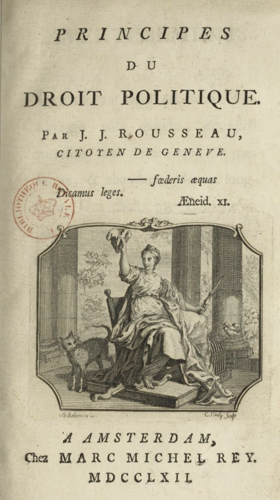
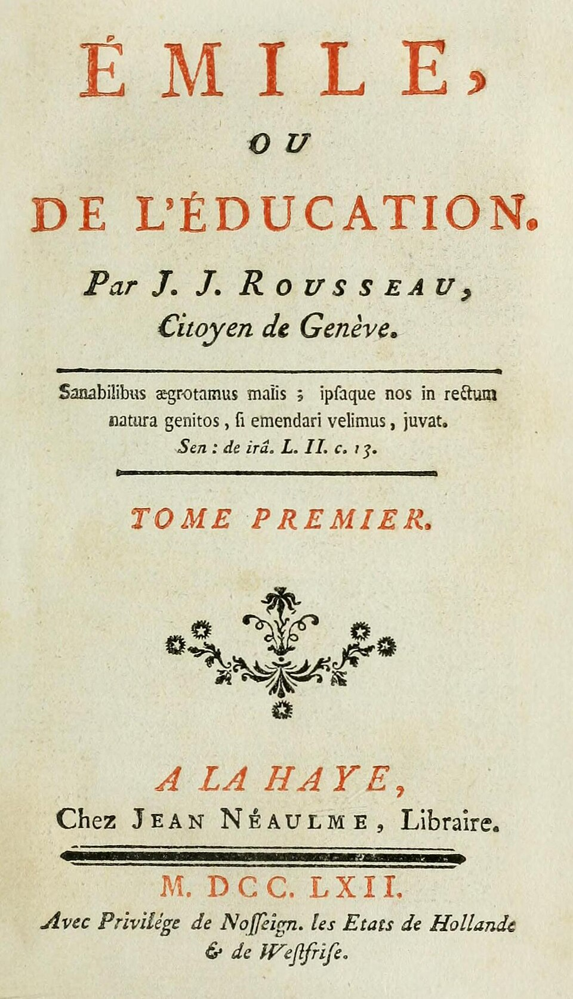
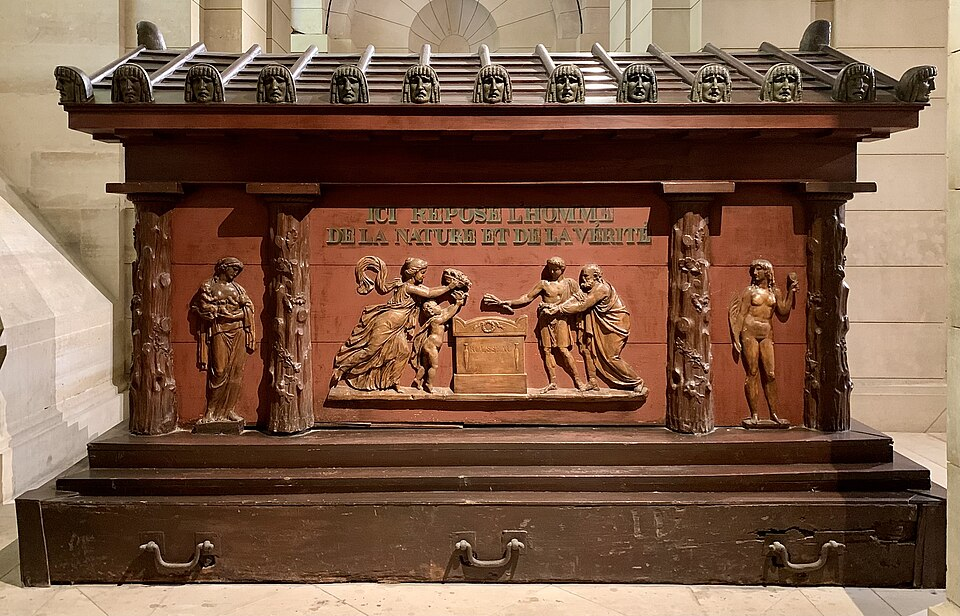

출처: Wikimedia Commons — Maurice Quentin de La Tour, Rousseau · 퍼블릭 도메인
⏱️ 10초 카드 · 계몽사상 (1712~1778)
사회계약론국민주권에밀문장은 주인보다 크다
여는 질문 — 말과 삶이 어긋난 사람의 좋은 말 — 받아들여야 할까, 경계해야 할까?
이름
한국어루소
원어Jean-Jacques Rousseau
실제 발음장자크 루소
로마자Jean-Jacques Rousseau
영어권Jean-Jacques Rousseau
제네바 출신 · 프랑스 활동 · 1712~1778
왜 이 사람인가
이 도감에서 루소는 '혁명의 연료'예요. 그가 쓴 '주권은 국민의 것'이라는 문장이 한 세대 뒤 프랑스혁명가들의 성경이 됐죠. 동시에 다섯 아이를 버린 삶 — 사상의 크기와 삶의 크기가 어긋난 대표 사례로, 좋은 말을 어떻게 대할지 묻게 해요.
생애
제네바의 시계공 아들로 태어나 어머니를 출산 중에 잃고, 떠돌이로 자라며 거의 독학했어요 — 살롱의 귀족 철학자들 사이에서 평생 이방인이었던 이력이 그의 사상의 색을 만들었죠.
'인간은 자유롭게 태어났으나 어디서나 사슬에 묶여 있다'(『사회계약론』, 1762) — 주권은 왕도 의회도 아닌 국민 전체의 것이며 양도할 수 없다는 그의 주장은 당대 가장 급진적이었고, 프랑스혁명가들의 성경이 됐어요. 교육 소설 『에밀』은 아동을 '작은 어른'이 아닌 고유한 존재로 본 근대 교육학의 출발점이고요.
그림자 — 정작 자신의 다섯 아이를 모두 고아원에 보냈고, 『에밀』의 여성 교육론은 '남성을 기쁘게 하는 법'에 머물렀어요. 사상의 크기와 삶의 크기가 일치하지 않는 대표 사례죠. 그의 유해는 혁명 후 팡테옹에 — 그가 흔든 세상의 한가운데에 — 안장됐어요.
자료로 보기 — 유묵·사진

〈사회계약론〉 표제지 (1762)'주권은 국민의 것' — 이 책의 첫 문장이 혁명의 불씨가 됐어요. 1762년 암스테르담에서 나온 초판 표제지예요.출처: Wikimedia Commons · CC BY-SA 4.0

〈에밀〉 표제지 (1762)같은 해 나온 교육 소설 〈에밀〉이에요. '아이는 작은 어른이 아니다' — 근대 교육이 여기서 출발했죠.출처: Wikimedia Commons · 퍼블릭 도메인

루소의 묘 (팡테옹)팡테옹에 놓인 그의 묘예요. '자연과 진리의 인간이 여기 잠들다'라고 새겨졌고, 횃불을 든 손이 관 밖으로 나와 있죠.출처: Wikimedia Commons · CC BY-SA 4.0
남긴 말
“인간은 자유롭게 태어났으나, 어디서나 사슬에 묶여 있다.”
〈사회계약론〉의 첫 문장이에요. '지금의 부자유는 당연한 게 아니다'라는 선언이 혁명의 불씨가 됐죠. · 출처: 루소, 〈사회계약론〉(1762)
“식물은 가꾸어져 자라고, 사람은 교육으로 만들어진다.”
교육 소설 〈에밀〉의 출발점이에요. 아이를 '작은 어른'이 아닌 고유한 존재로 본 근대 교육학의 씨앗이죠. · 출처: 루소, 〈에밀〉(1762)
연표
1712제네바에서 출생
1762『사회계약론』·『에밀』 — 금서가 되다
1778사망
1794혁명 정부, 팡테옹에 이장
이방인의 길 — 제네바에서 팡테옹까지
떠돌이로 자라 어디서도 완전히 속하지 못한 사람의 길이에요. 마지막엔 그가 흔든 도시 한가운데로 돌아왔죠.
현재 지도 위 표시예요. 금서 처분으로 쫓겨 다닌 그가, 죽은 뒤엔 프랑스가 가장 떠받드는 자리에 묻혔어요.
빛과 그림자국민주권이라는 현대 민주주의의 심장을 만든 빛 — 버려진 다섯 아이와 좁은 여성관이라는 그림자. '문장은 주인보다 크다'(살롱 하녀의 단서)는 말이 그에게 가장 잘 들어맞아요.
더 깊이 (고등·일반)
〈사회계약론〉 — 주권은 누구의 것인가
루소는 주권이 왕도 의회도 아닌 '국민 전체'의 것이며 양도할 수 없다고 봤어요. 그가 말한 '일반의지(모두를 위한 뜻)'는 현대 민주주의의 심장이 됐지만, '전체의 뜻'이 개인을 누를 위험도 함께 품고 있었죠.
〈에밀〉 — 근대 교육의 출발
아이는 어른의 축소판이 아니라 자기만의 속도로 자라는 존재 — 이 생각이 근대 교육학을 열었어요. 다만 같은 책의 여성 교육론은 '남성을 기쁘게 하는 법'에 머물러, 오늘날엔 비판받는 한계도 분명해요.
혁명가들의 성경
루소는 정작 혁명을 보지 못하고 죽었지만(1778), 11년 뒤 터진 프랑스혁명에서 그의 책은 성경처럼 읽혔어요. 특히 로베스피에르는 루소를 가장 깊이 흠모한 제자였죠.
그림자 — 말과 삶의 거리
국민주권을 외친 그가, 정작 자신의 다섯 아이를 모두 고아원에 보냈어요. '문장은 주인보다 크다' — 좋은 말과 그 말을 한 사람의 삶이 일치하지 않을 때, 우리는 그 말을 어떻게 대해야 할까요?
팡테옹으로
혁명 정부는 1794년 그의 유해를 파리 팡테옹으로 옮겼어요. 그가 흔든 세상의 한가운데에, 위인들과 나란히 잠든 거예요.